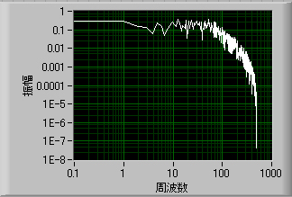

フーリエ変換，特に，FFT，においては，データの数は
２のべき乗
が好ましいとされています．
５１２，とか１０２４，とか２０４８ポイントです．
また，パワースペクトルの表示として，このような形をよく見かけます．

左側の点が荒く，右側に行くほど密になる形．
これは，両対数プロット表示だからです．
広範囲の周波数帯の情報を得るのには，この両対数プロット表示がよく利用されます．
それと，前ページの加算平均．
ノイズのノイズ成分が小さくなるのはあくまでランダムなノイズのみです．
電源ノイズ（５０，６０Hzなど）の成分は定常的なノイズのため，加算平均しても減少しません．
いかがでしょうか？
フーリエ変換が身近になったでしょうか？